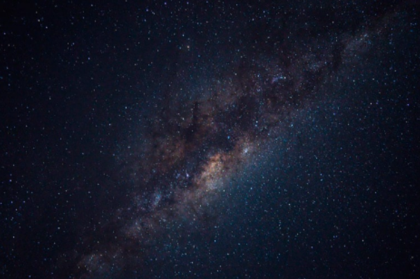

El Sistema Solar es un conjunto formado por el Sol y los ocho planetas que giran a su alrededor.
De los ochos planetas, uno es donde vivimos: La Tierra
Además, de estos elementos hay otros cuerpos celestes que también orbitan alrededor de la gran estrella solar, como los satélites de cada planeta, los cometas o los asteroides
En el universo hay millones de galaxias. Una de ellas es la que conocemos como Vía Láctea
La vía láctea, formada por estrellas, polvo y gas, tiene forma de espiral.
Podría decirse que su aspecto es algo así como un remolino con varios brazos; pues bien, en uno de ellos, el llamado brazo de Orión, se encuentra el Sistema Solar.

Lo cierto es que hace tanto tiempo que es muy difícil saber este dato con seguridad, pero se cree
que fue hace... ¡4.5 MIL MILLONES DE AÑOS! Si lo piensas bien te darás cuenta de que
estamos hablando de un espacio temporal impactante y que nos resulta difícil de imaginar.